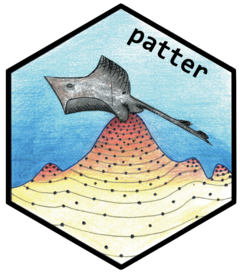
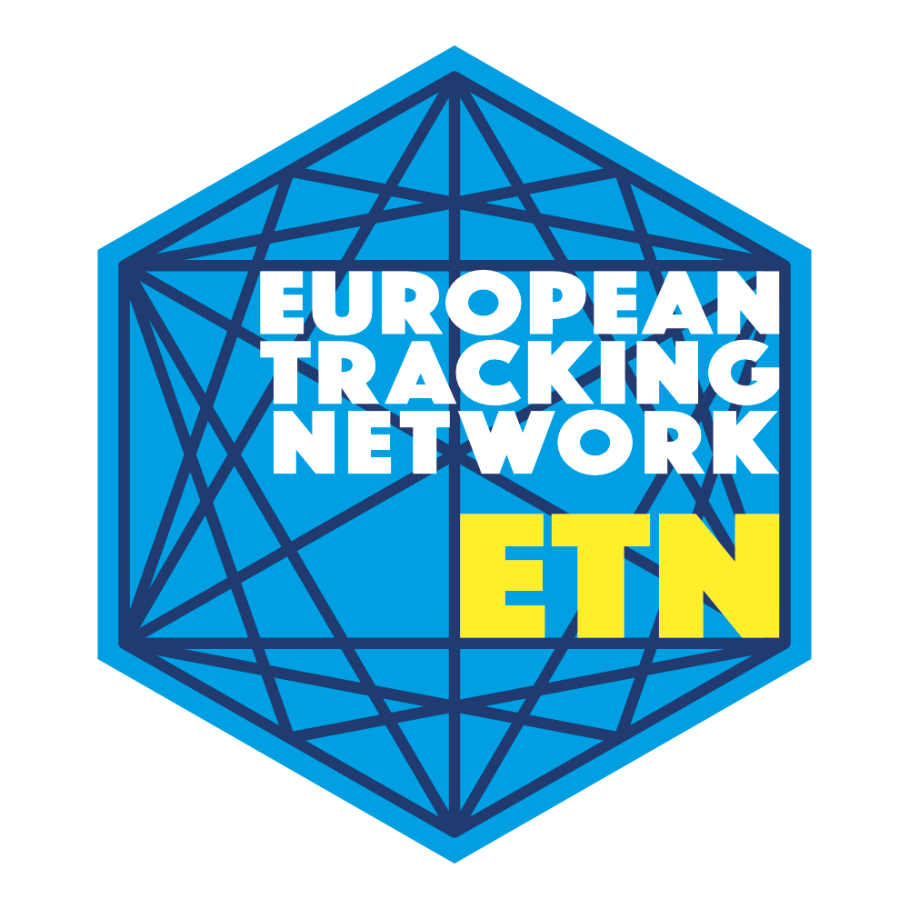
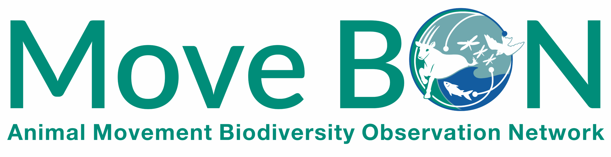

R Packages
activityTOA
activityTOA is an R package that implements the Time-of-Arrival (TOA)-based method for estimating animal activity from single-receiver acoustic telemetry setups. Check out the accompanying paper for more information: Inferring activity patterns of aquatic animals from single-receiver acoustic telemetry setups
Visit activityTOApatter
The R package patter uses particle filtering and smoothing algorithms to reconstruct animal movement paths and estimate patterns of space use from tracking data, particularly passive acoustic telemetry.
Visit patter
Tools & Datasets
Arrayplanr
Helps you plan or optimize your receiver array. For more information, check out this paper: Optimising the performance of acoustic telemetry receiver arrays for tracking aquatic animals using the arrayplanR package
Visit ArrayplanrUseful Links

Gemeinschaft für Aquatische Telemetrie
Official website of the Gemeinschaft für Aquatische Telemetrie Deutschland.
Visit GATE
WILDLABS.NET - The conservation technology network
WILDLABS is a global conservation technology community. Great source for online courses, connecting to peers and they have an open forum to ask questions.
Visit WILDLABSMovebank for animal tracking data
Movebank is an online platform helping researchers to manage, share, analyze and archive animal tracking and other animal-borne sensor data.
Visit MovebankMoveBON
MoveBON seeks to build an interoperable, policy-aligned system for mobilizing animal movement data at scale.
Visit MoveBON